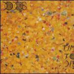
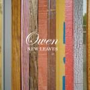
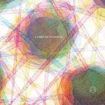

Music Reviews
-
Raekwon Only Built For Cuban Linx Part 2
If Raekwon's latest is his best in years and one of the best of the year, why is also such a bummer?
Nate Adams struggles with time travel, rap music... -
Locrian Drenched Lands
Drenched Lands, debut album from Chicago pensive metal band, Locrian, inspires one to lose oneself in darkness.
Sean Caldwell could really use a flashlight... -

Air Love 2
After the cohesive-to-a-fault Pocket Symphony, Air throws down the gauntlet with their most eclectic disc to date. And by gauntlet, I mean rotating bed with silk sheets, purple shag rug and a bottle of Bordeaux's finest.
Ryan Pratt makes a Kid Rock comparison, dies a little inside... -

The Dodos Time To Die
The Dodos follow up last year's mini-triumph with a slick disappointment.
Brett Oronzio reviews... -

Girls Album
They've got the best back-story of 2009 and a couple of cracking singles under their belt, but is this duo from San Francisco the finished article or has the hype machine sold us another dud?
David Coleman attempts to find out... -

The Clientele Bonfires on the Heath
Steering away from any big revelation, The Clientele deliver on their own terms with Bonfires on the Heath, another strong, yet familiar pop record that could quite possibly be their last.
Juan Edgardo Rodriguez prepares the eulogy... -

Owen New Leaves
Following up on the orchestrated touches and marital dos/don'ts of At Home With Owen, Mike Kinsella dives headfirst into New Leaves committed to both. Luckily for us, the headaches of growing up come bundled with a fair share of grace.
Ryan Pratt reviews Owen's latest self-portrait... -

Vivian Girls Everything Goes Wrong
The second full length release from Vivian Girls isn't a huge surprise in terms of sound, but there's plenty of smart songwriting on display.
Neil Insh reviews... -
Volcano Choir Unmap
Justin Vernon of Bon Iver teams up with Collections of Colonies of Bees for an excellent post-rock side project.
Andrew Baer reviews Unmap... -

A Sunny Day in Glasgow Ashes Grammar
Philadelphia based ambient pop collective prove their versatility with Ashes Grammar, a wide ranging collage of sounds that's both entrancing and overwhelming in its abundance.
Juan Edgardo Rodríguez refrains from using the word ethereal in this review...